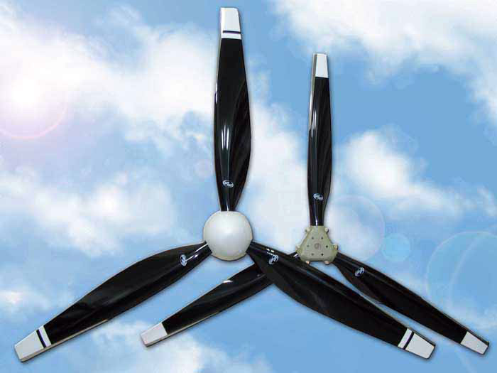

<!DOCTYPE html>
<html lang="ru"></html>
<head>
  <meta charset="UTF-8">

  <title>Воздушные винты для сверхлегких летательных аппаратов</title>
  <meta name="description" content="Изготовлени и продажа воздушных винтов, пропеллеров для самолетов, дельталетов, автожиров, парапланов. Луганск, патент, доставка, купить.">

  <meta name="keywords" content="воздушный винт для легких самолетов, воздушный винт для дельтапланов, винт для автожиров, винт для парапланов, пропеллер для дельтаплана, пропеллер купить, изготовление пропеллеров, пропеллер для параплана">
  <link href="css/style.css" rel="stylesheet" type="text/css">
  <link rel="shortcut icon" href="http://lugaprop.com.ua/favicon.ico" type="images/x-icon"> 

</head>

<body class="lgp">
  <div id="wrapper">
    <header>
      <a href="#" title="На главную"></a>
      <div class="contacts">
        <div class="contact-mail">
          email: <a href="mailto:konotop1957@mail.ru" target="_top">konotop1957@mail.ru</a>
          Skype: konotop57
        </div>
        <div class="contact-adres">
          <address>Украина, г.Луганск</address>
          <b> +38(063)242-06-43</b>
          +38(050)621-10-96,
          +38(050)570-40-19
        </div>
      </div>
    </header> 
    
    <div class="clearfloat"> </div>
    
    <main>
      <section>
        <h1>Мы возобновили работу! Будем рады вашим заказам</h1>
        <h2>Изготовление и продажа воздушных винтов для сверхлегких летательных аппаратов</h2>
        <p>Частный предприниматель Конотоп Александр Васильевич (ЧП Конотоп) – производитель <b>воздушных винтов для сверхлегкиx летательных аппаратов</b> (СЛА): самолетов, дельталетов, автожиров, парапланов в Луганске. Коллектив ЧП состоит из группы специалистов, которые имеют многолетний опыт работы с композиционными материалами. </p>
        <div class="center"><a href="images/prop1.jpg" rel="lightbox"></a></div>
      </section>
      <section>
        <p>Коллектив ЧП Конотоп с 2003 года занимается разработкой, проектированием, изготовлением и испытаниями своих изделий.</p>
        
        <p>Мы сотрудничаем с производителями летательных аппаратов, как в Украине, так и за рубежом. Благодаря информации, поступающей от наших клиентов, производится анализ потребительского рынка с целью улучшения качества продукции.</p> 
        
        <p>На сегодняшний день ведется активная работа с изготовителем втулок для <b><a href="http://lugaprop.com.ua/goods.php" title="Смотреть продукцию">винтов изменяемого шага</a></b>, винты такого типа находят своё применение не только на летательных аппаратах, но и на аэроглиссерах и аэросанях.</p>

        <p>Модельный ряд представляют 2-, 3-, 4- и 5-лопастные <b>воздушные винты</b>, диаметром от 400 мм до 1860 мм. Особое внимание стоит уделить винтам с лопастями саблевидной формы, они обеспечивают низкий уровень шума, а также высокие летно-технические показатели.  Воздушные винты предназначены для установки на двигатели от 5 л.с. до 130 л.с. </p>
        <div class="center"><a href="images/prop2.jpg" rel="lightbox"></a></div>
      </section>
      <section>
        <p>Прочностные испытания были проведены в  лаборатории прочности ХАИ, при активной помощи специалистов Восточноукраинского национального университета им. В. Даля.</p>
        <div class="center"><a href="images/xai.jpg" rel="lightbox"></a></div>
      </section>
      <section>
        <p>Продукция защищена патентами. </p>
        <div class="center"><a href="images/patent.jpg" rel="lightbox"></a></div>
      </section>
    </main>
    <nav>
      <h3>Меню</h3>
      <ul>
        <li><a href="images/Воздушные винты для сверхлегких летательных аппаратов.html">Главная</a></li>
        <li><a href="http://lugaprop.com.ua/news.php">Новости</a></li>
        <li><a href="http://lugaprop.com.ua/goods.php">Продукция</a></li>
        <li><a href="http://lugaprop.com.ua/galery.php">Галерея</a></li>
        <li><a href="http://lugaprop.com.ua/delivery.php">Заказ и доставка</a></li>
        <li><a href="http://lugaprop.com.ua/contact.php">Контакты</a></li>
      </ul>
      <h3 class="mt4">Статьи и новости</h3>
      <ul>
        <li><b><a href="http://lugaprop.com.ua/news.php" class="red">Новые модели саблевидных винтов</a></b></li>
        <li><b><a href="http://lugaprop.com.ua/news.php">Запущена в серийное производство новая модель саблевидного воздушного винта левого вращения L-108 диаметр 1690 мм</a></b></li>
        <li><b><a href="http://lugaprop.com.ua/news.php">Начато производство новых моделей саблевидных винтов</a></b></li>
        <li><a href="http://lugaprop.com.ua/sborka.php">Сборка и хранение воздушного винта</a></li>
      </ul>
    </nav>
    <div class="clearfloat"> </div>
    <footer>
      <p><b>2015 ©  ЧП Конотоп А. В. Пропеллеры для сверхмалых летательных аппаратов: самолетов, дельталетов, автожиров, парапланов</b></p>
    </footer>
  </div>
</body>
</html>